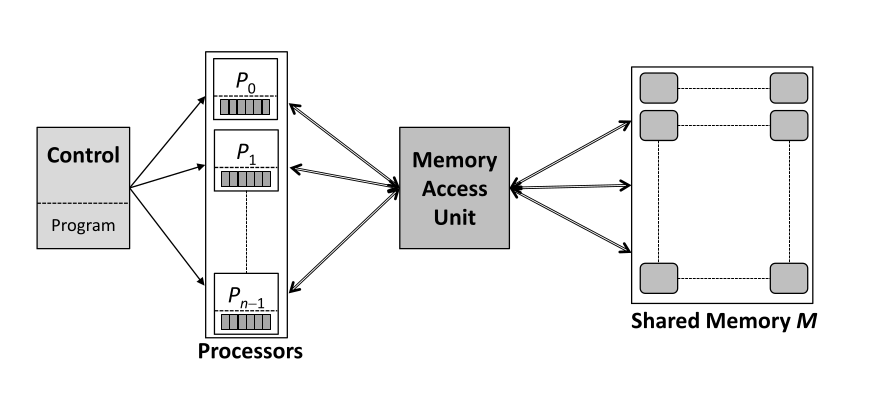
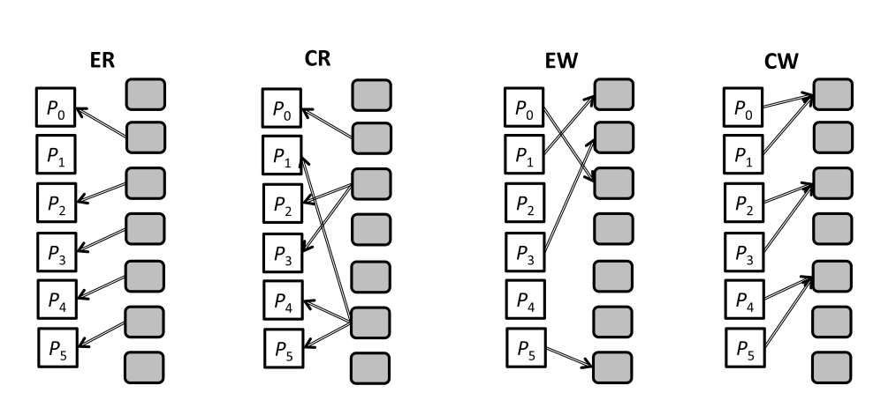
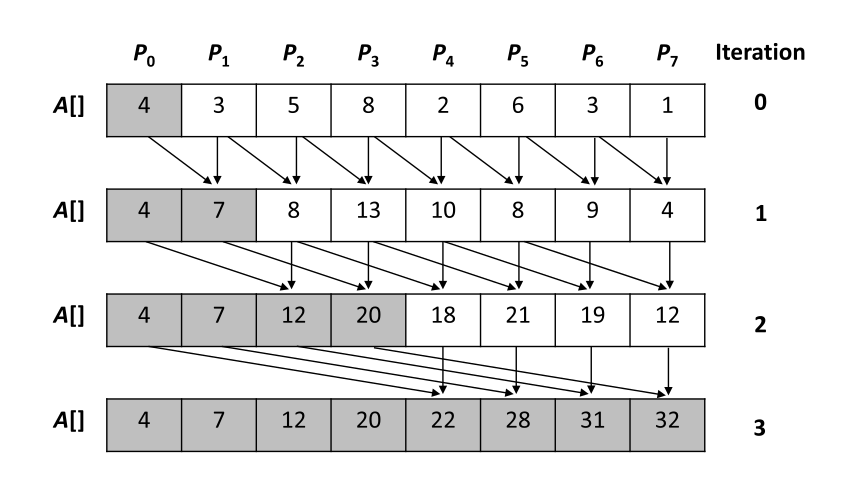
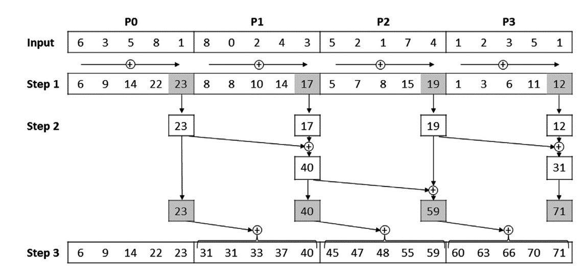
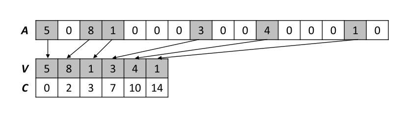
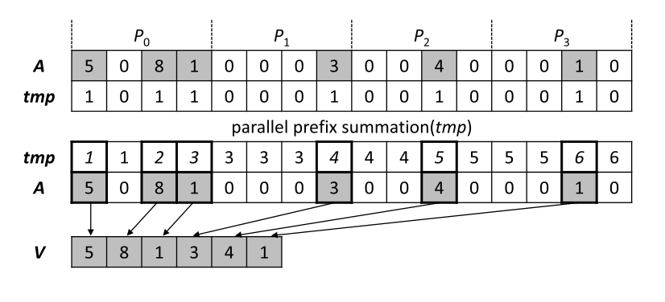
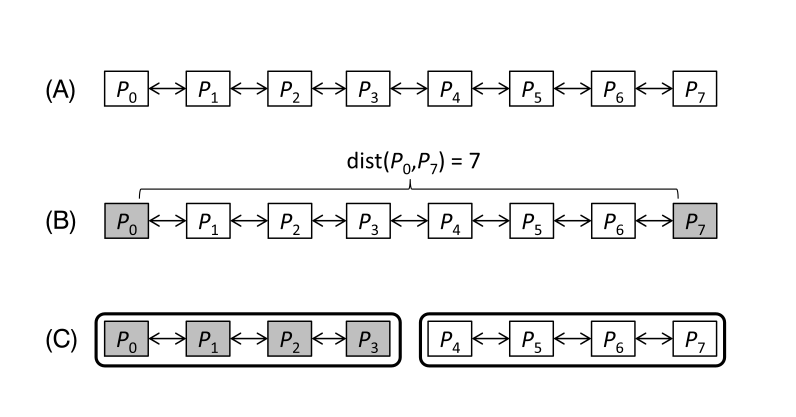
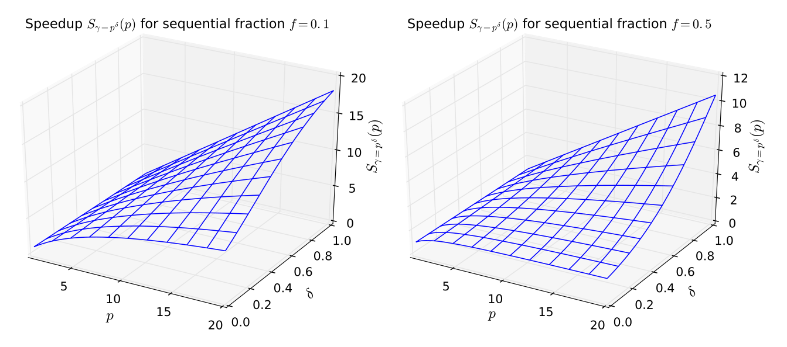
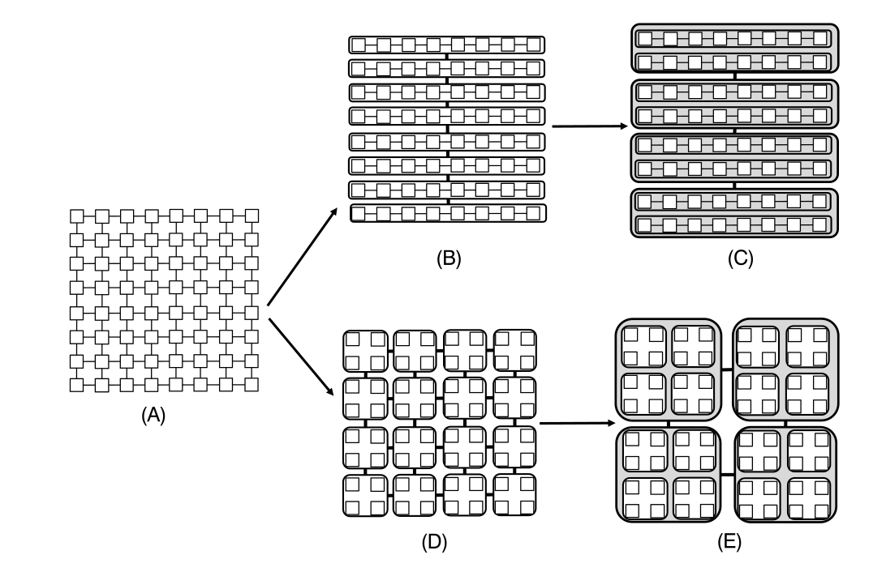

Theoretical Background
PRAM
To begin our study of parallel algorithms we consider a theoretical computer model: the PRAM.
PRAM: Parallel Random Access Machine
The model facilitates the design of parallel algorithms without worrying about all the messy details of real computer architectures.
PRAM
PRAM: general features
$n$ identical processors $P_i$, $i = 0,\ldots,n-1$ operating in lock-step.
At every step, each processor executes an instruction cycle in $3$ phases:
- Read phase: each processor can read a single data item from a shared memory cell and store it in a local register.
- Compute phase: each processor can perform a fundamental operation on its local data and store the result in a register.
- Write phase: each processor can write a data item to a shared memory cell.
PRAM: how it works
Three-phase PRAM instructions are executed synchronously.
Communication in the PRAM is implemented by the shared memory access.
We assume uniform memory access times, which is not true for real computers.
PRAM variants
There are multiple variants depending on how memory access is handled. The $3$ most popular variants are:
- Exclusive Read Exclusive Write (EREW): no two processors are allowed to read/write to same shared memory cell during any cycle.
- Concurrent Read Exclusive Write (CREW): simultaneous read allowed, but not simultaneous writes.
- Concurrent Read Concurrent Write (CRCW): both simultaneous reads and writes allowed.
PRAM variants
PRAM variant CRCW: dealing with simultaneous writes
Four common approaches to deal with simultaneous writes to the same memory cell:
- Priority CW: Processors are assigned priorities and highest wins.
- Arbitrary CW: Randomly chosen processor wins.
- Common CW: only written to if all values are equal (common).
- Combining CW: all values are combined using associative binary operation, e.g. sum, product, minimum, logical AND.
Parallel prefix sum on a PRAM
Consider an exclusive write variant PRAM for calculating a prefix sum of an array of $n$ numbers.
for (i=1; i<n; i++) A[i] = A[i] + A[i-1];Goal: find a cost-optimal PRAM algorithm where $C(n) = T(n,p) \times p$ is linear in $n$.
Parallel prefix sum: first approach
Use $p = n$ processors in a recursive doubling technique.
Parallel prefix sum: first approach
Use $p = n$ processors in a recursive doubling technique.
// each processor copies an array entry to a local register
for (j=0; j<n; j++) do_in_parallel
reg_j = A[j];
// sequential outer loop
for (i=0; i<ceil(log(n)); i++) do
// parallel inner loop performed by proc j
for (j = pow(2,i); j<n; j++) do_in_parallel {
reg_j += A[j-pow(2,i)]; // perform computation
A[j] = reg_j; // write result in shared memory
}$\log_2(n)$ iterations required, cost of $C(n) = T(n,p) \times p = \mathcal{O}(\log(n)) \times n = \mathcal{O}(n \times \log(n))$.
Parallel prefix sum: first approach
This first algorithm is not cost-optimal (log-linear, not linear).
Need to lower runtime or number of processors.
Reduce from $p=n$ to $p = n/\log_2(n)$.
Parallel prefix sum: PRAM algorithm
- Partition $n$ input values into chunks of size $\log_2(n)$. Each processor parallel computes local prefix sum, $\mathcal{O}(\log(n))$.
- Perform non-cost-optimal sum on $n/\log(n)$ partial results, $\mathcal{O}(\log(n/\log(n)))$.
- Each processor adds value from its left neighbour computed in stage 2 to its chunk, $\mathcal{O}(\log(n))$
- This approach was used before...
Parallel prefix sum: PRAM algorithm
(Typo in final array: last set of 5 numbers should be 60 62 65 70 71)
Parallel prefix sum: code listing
We assume $n = 2^k$, so $p = n/k$.
//Stage 1: each processor i computes a local
//prefix sum of a subarray of size n/p = log(n) = k
for (i=0; i<n/k; i++) do_in_parallel
for (j=1; j<k; j++)
A[i*k+j] += A[i*k+j-1];
//Stage 2: prefix sum calculation using only rightmost value
//of each subarray which takes O(log(n/k)) steps
for (i=0; i<log(n/k); i++) do
for (j = pow(2,i); j<=n/k; j++) do_in_parallel
A[j*k-1] += A[(j-pow(2,i))*k-1];
//Stage 3: each processor i adds value computed in stage 2 by
//processor i-1 to each subarray element except last
for (i=1; i<n/k; i++) do_in_parallel
for (j=0; j<k-1; j++)
A[i*k+j] += A[i*k-1];Cost of $C(n) = T(n,p) \times p = \mathcal{O}(\log(n)) \times \mathcal{O}(\frac{n}{\log(n)}) = \mathcal{O}(n)$.
Sparse array compaction
We have a one-dimensional array $A$ where most entries are zero.
More efficient to store non-zero values (in array $V$) and their coordinates (in array $C$): compaction.
Sequential algorithm iterates over $n$ elements of $A$ incrementally building $V$ and $C$ in time linear in $n$.
Sparse array compaction
Sparse array compaction: PRAM algorithm
Cost-optimal parallel algorithm with $p=n/\log_2(n)$:
- Generate temporary array $tmp$ with $tmp[i] = 1$ if $A[i] \neq 0$ and $tmp[i] = 0$ otherwise.
- Perform parallel prefix sum on $tmp$: for each non-zero element of $A$ the respective value in $tmp$ is the destination address for that element in $V$.
- Write non-zero elements of $A$ to $V$ using these addresses, coordinates $C$ can be written in a similar way.
Sparse array compaction: PRAM algorithm
Network Topologies
Two main types: shared and switched.
Shared network, such as a bus (e.g. ethernet) communicates one message at a time.
Switched networks simultaneously transfer several messages between different pairs of nodes.
In HPC distributed memory architectures a switched network is usually used.
The specific network topology is key in determining the scalability and performance of an HPC architecture.
Network Topologies: switched network
We represent the network as a connected graph whose vertices are nodes (switches or processors) and the edges are communication links.
Direct networks: all nodes have a processor attached.
Indirect networks: some nodes are switches (intermediate routing nodes).
Analyse networks using following network-theoretic concepts:
- Degree: maximum number of neighbours of any node.
- Diameter: length of longest of all shortest paths between any two nodes.
- Bisection-width: minimum number of edges to be removed to disconnect network into two equal halves.
Network Topologies: contradictory requirements
Desirable properties:
- Constant degree: independent of network size, allows scalability.
- Low diameter: to support efficient communication between any pair of processors.
- High bisection-width: to eliminate network bottlenecks, maintain high internal bandwidth. May require non-constant network degree.
Network Topologies: linear array
$n$ nodes, $P_0,\ldots,P_{n-1}$ denoted as $L_n$. Node $n$ is connected to its left and right neighbours only.
deg$(L_n) = 2$, longest distance between any two nodes is from $P_0$ to $P_{n-1}$ where data has to traverse $n-1$ links, so diam$(L_n) = n-1$, and bw$(L_n) = 1$.
Network Topologies: 2D mesh
$n$ nodes in a $k \times k$ grid denoted as $M_{k,k}$. We will assume $k$ is even for simplicity.
deg$(M_{k,k}) = 4$, and is independent of mesh size.
Longest distance between any two nodes is diagonally across grid, where data has to traverse $2(k-1)$ links, so diam$(M_{k,k}) = 2(k-1) = 2(\sqrt{n}-1)$.
To split the grid into two equal halves we must cut at least $k$ links, so the bisection-width is bw$(M_{k,k}) = k = \sqrt{n}$.
Network Topologies: 2D and 3D tori
A common extension of the 3D mesh is the 2D torus, where the top and bottom of the columns of cores are connected, as are the left and right-most cores (wrap around edges).
Reduces diameter and bisection-width by a factor of $2$ compared to the 2D mesh, but keeps degree constant at $4$.
A 3D mesh extends the 2D mesh by adding another dimension: degree $6$, diameter $3(k-1) = 3(\sqrt[3]{n} - 1)$, bisection-width $k^2 = n^{2/3}$.
3D torus is a 3D mesh with wrap around edges. This topology has been used in major HPC facilities.
Network Topologies: binary tree
$n = 2^d - 1$ nodes are arranged in a tree of depth $d$.
Each node connects to one parent and two children, so the degree is $3$.
Longest distance is from leaf node on left to leaf node on right. Requires going up to the root $(d-1)$ links, then down to the leaf $(d-1)$ links, i.e. diameter of $2(d-1) = 2 \log_2 (n+1)$.
Degree is constant and diameter is low, but bisection-width is $1$, extremely low!
Amdahl's and Gustafson's Laws
Theoretical method to obtain upper bound on possible speedup when parallelising a sequential program.
Split program into two parts:
- $T_{ser}$: part that is sequential, i.e. does not benefit from parallelisation or has not been parallelised.
- $T_{par}$: part that may benefit from parallelisation.
Amdahl's and Gustafson's Laws
Runtime of the program on a single processor is $T(1) = T_{ser} + T_{par}$.
Assume best possible speedup is linear, so parallel part runs $p$ times faster on $p$ processors (serial part remains unchanged): $T(p) \geq T_{ser} + \frac{T_{par}}{p}$
$$S(p) = \frac{T(1)}{T(p)} \leq \frac{T_{ser} + T_{par}}{T_{ser} + \frac{T_{par}}{p}}$$
Amdahl's and Gustafson's Laws
Use fractional runtime: $T_{ser} = f \cdot T(1)$ and $T_{par} = (1-f)\cdot T(1)$.
$S(p) = \frac{T(1)}{T(p)} \leq \frac{T_{ser} + T_{par}}{T_{ser} + \frac{T_{par}}{p}} = \frac{f\cdot T(1) + (1-f)\cdot T(1)}{f\cdot T(1) + \frac{(1-f)\cdot T(1)}{p}} = \frac{1}{f+\frac{1-f}{p}}$.
This is Amdahl's Law.
Examples of Amdahl's Law
Example 1: 95% of execution time within a loop we want to parallelise. Maximum speedup possible on $6$ processors is: $S(6) \leq 1/(0.05 + 0.95/6) = 4.8$.
Example 2: 10% of execution time spent in serial code, limit of speedup possible: $S(\infty) \leq \lim_{p \to \infty} \frac{1}{0.1 + 0.9/p} = 10$.
Important limitation of Amdahl's Law: problem size is constant (strong scalability)
More general law including scaling of problem size
- $\alpha$: scaling applied to non-parallel part due to varying problem size.
- $\beta$: scaling applied to parallel part due to varying problem size.
$T_{\alpha \beta}(1) = \alpha \cdot T_{ser} + \beta \cdot T_{par} = \alpha \cdot f \cdot T(1) + \beta \cdot (1-f) \cdot T(1)$
$S_{\alpha \beta}(p) = \frac{T_{\alpha \beta}(1)}{T_{\alpha \beta}(p)} \leq \frac{\alpha \cdot f + \beta \cdot (1-f)}{\alpha \cdot f + \frac{\beta \cdot (1-f)}{p}}$
More general law including scaling of problem size
We now define $\gamma = \beta/\alpha$ and reformulate the speedup: $$S_{\gamma}(p) \leq \frac{f + \gamma \cdot (1-f)}{f + \frac{\gamma \cdot (1-f)}{p}}$$
- $\gamma = 1$: constant ratio of problem size scaling between parallel and non-parallel parts. This gives Amdahl's Law.
- $\gamma = p$: parallelisable part grows linearly in $p$ while serial part is constant. Gustafson's Law: $S(p) \leq f + p\cdot (1-f) = p + f \cdot (1-p)$.
Examples of the general law
Example 1: problem that is 15% serial and 85% linearly parallelisable for a given problem size. Assuming serial time does not grow with problem size:
- (i) With $50$ processors and no scaling of the problem size we get a speedup of $S_{\gamma = 1}(50) \leq 1/(0.15 + 0.85/50) = 5.99$.
- (ii) Now we scale the problem by a factor of $100$: $S_{\gamma = 100}(50) \leq (0.15 + 100 \cdot 0.85)/(0.15 + (100 \cdot 0.85)/50) = 46.03$.
Examples of the general law
Example 2: we want a speedup of $100$ on $128$ processors.
- (i) What is the maximum sequential fraction when the speedup is acheived under strong scalability? Use Amdahl's Law: $100 = 1/(f + (1-f)/128)$ so $f = 0.28/127 = 0.0022$. Less than 1%!
- (ii) What is the maximum sequential fraction when considering weak scalability with $\gamma$ scaling linearly? Use Gustafson's Law: $100 = 128 + f \cdot (1-128)$ so $f = 28/127 = 0.22$. Thus a higher fraction may be serial in weak scalability.
General law: speedup and efficiency
Parameterise $\gamma(p,\delta) = p^{\delta}$. Thus $\delta = 0$ is Amdahl's Law, and $\delta = 1$ is Gustafson's Law.
$S_{\gamma}(p) = \frac{f + (1-f)p^{\delta}}{f+(1-f)p^{\delta - 1}} \quad \quad E_{\gamma}(p) = \frac{f+(1-f)p^{\delta}}{pf + (1-f)p^{\delta}}$
For $\delta \leq 0$ the scaled speedup is bounded by either $1$ or $1/f$:
$\lim_{p \to \infty} S_{\gamma}(p) |_{\delta < 0} = 1 \quad \quad \lim_{p \to \infty} S_{\gamma}(p) |_{\delta = 0} = \frac{1}{f}$
General law: speedup and efficiency
For $\delta > 0$ the speedup is unbounded in the limit $p \to \infty$. Thus we can produce any speedup as long as the input scaling $\gamma$ has a monotonous dependency on $p$.
General law: speedup and efficiency
The efficiency $E_{\gamma}(p)$ tends to $(1-f)$ in the limit for $\delta = 1$ and vanishes for $\delta = 0$.
We often want to find lines of constant efficiency in parameter space (iso-efficiency lines).
We sometimes refer to the iso-efficiency function: the scaling of the problem size required to maintain fixed efficiency.
Foster's parallel algorithm design methodology
PCAM: Partitioning, Communication, Agglomeration, Mapping

PCAM: Partitioning
Decomposition of total task into smaller tasks. We want to maximise the number to identify as much parallelism as possible (fine-grained parallelism).
- Domain decomposition: partition the data, then apply same computations to each data chunk (data parallelism)
- Functional decomposition: partition the computation, then apply each part to the data (task parallelism)
Domain decomposition often has finer granularity than functional decomposition.
PCAM: Communication
We must determine the required communications between tasks identified in the Partitioning stage.
- Local or global
- Structured or unstructured
- Static or dynamic
- Synchronous or asynchronous
PCAM: Agglomeration
Now we want to coarsen the granularity of our design by combining smaller tasks into larger tasks.
Directly implementing a very fine-grained parallel algorithm is likely to be very inefficient due to communication overheads.
Better to agglomerate several tasks in one processor: improves data locality and reduces communication times.
PCAM: Mapping
Finally we map our agglomerated tasks to the actual processors.
Goals of the mapping:
- To minimise communication by assigning tasks with frequent interactions within a processor.
- To enable concurrency by assigning parallelisable tasks to different processors.
- To balance the workload of the processors.
Example of PCAM: Jacobi iteration
Fine-grained parallelism: domain decomposition of a stencil code on a 2D array: $\phi_{t+1}(i,j) = (\phi_t(i+1,j) + \phi_t(i-1,j) + \phi_t(i,j+1) + \phi_t(i,j-1))/4$
We then coarse-grain by agglomerating and mapping to the processors.
Example of PCAM: Jacobi iteration
We now compare the communication time of both methods, considering $p$ processors.
Time required to send $n$ bytes: $T_{comm}(n) = s + r \cdot n$ where $s$ is the latency and $r$ is the inverse of the available bandwidth.
Communication time between $2$ processors for Method 1 is $2(s + r \cdot n)$ and for Method 2 is $4(s + r(\frac{n}{\sqrt{p}}))$.
Method 2 is superior for a large number of processors as it decreases with increasing $p$.